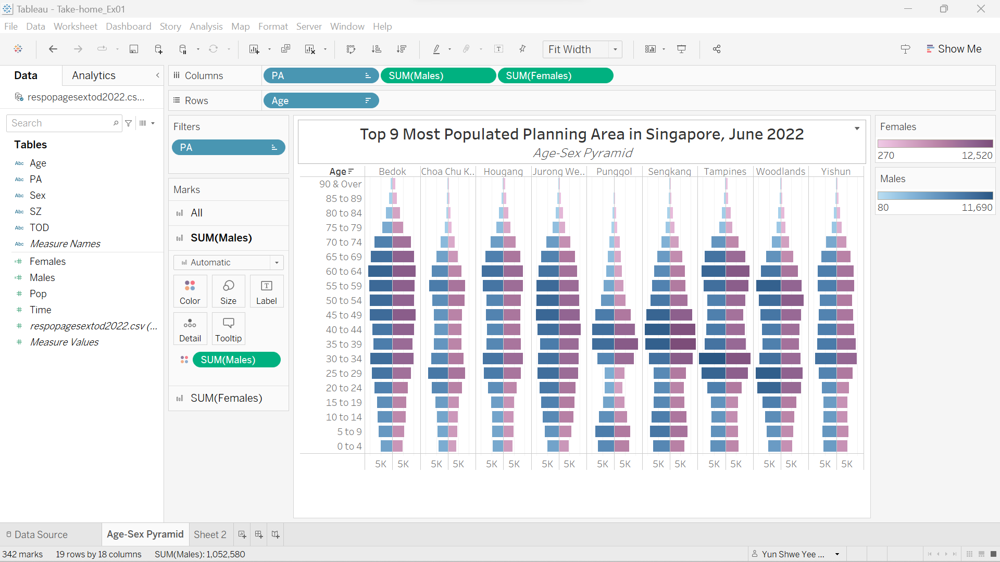

Take-home Exercise 1
1. The Task
The task for take-home exercise 1 is to plot the population pyramid for 9 selected area in Singapore to illustrate the demographic structure of Singapore at planning area level.
2. The Data
Singapore Residents by Planning Area / Subzone, Age Group, Sex and Type of Dwelling, June 2022 from Department of Statistics, Singapore is used to plot 9 planning area.
3. Step by Step Description
The final worksheet is published in https://public.tableau.com/app/profile/yun.shwe.yee.kyaw/viz/Take-home_Ex01_16742356941600/Age-SexPyramid
| No. | Step |
|---|---|
| 1 | Load the data file respopagesextod2022.csv into Tableau |
| 2 | Open a new worksheet and drag Age to Rows |
| 3 | Select Sex and right click. Select Create -> Calculated Field to create two new variables Males and Females |
| 4 | Males and Females variables are created using condition as shown on these pictures.
|
| 5 | Drag PA, Males and Females to the Columns |
| 6 | Right click on the PA and select Top. Next, sort the PA based on the number of population in descending order and take the top 9 populated areas for plotting age-sex pyramid as shown in the picture. |
| 7 | Select Males axis and right click on it as shown in the picture. |
| 8 | Tick the Reversed as shown in the picture. |
| 9 | Drag Males variable to SUM(Males) area and change the colour. Do the same for Females variable. |
| 10 | The final complete plot with legend is as shown in the picture.  |


4. Different Types of Population Pyramid
Population pyramids are useful in illustrating age-sex structure of the population. They also provide information about fertility rate, mortality rate and population growth trend.
There are three basic shapes of population pyramids.
Expansive
Expansive population pyramids are used to display the population that are growing and most of the populations are in younger age cohorts. Their typical pyramid shape has a wide base and narrow top. Expansive pyramids indicate high fertility, high mortality, low life expectancy, higher population growth rates.
Constrictive
Constrictive population pyramids are used to are used to display the population that are shrinking and most of the populations are in older age cohorts. They can often look like beehives and has narrow base. Constrictive pyramids indicate low fertility, low mortality, high life expectancy and ageing of population.
Stationary
Stationary, or near stationary, population pyramids are used to display the populations that are not growing and have equal distribution across age cohorts . They usually have rectangular that get narrower toward the top. Stationary pyramids indicate low fertility, low mortality and high life expectancy.
5. Discussion
The top 9 most populated planning areas in Singapore are selected out of 55 planning area to do age-sex population pyramid in trellis display. By selecting 9 most populated areas, it can reveal more accurate population growth trend in Singapore,
The top 9 most populated planning area is as following.
Bedok
Choa Chu Kang
Hougang
Jurong West
Punggol
Sengkang
Tampines
Woodlands
Yishun
The below picture is the final result of data visualization for 9 planning area.
As you can see from the picture above, Bedok and Jurong West area display the distinct constrictive population pyramid shapes while the others displays marginally constrictive population pyramid shapes. These plots also reveal that Singapore have low fertility, low mortality, high life expectancy and ageing of population. It also indicates that Singapore is a developed country with ease access of birth control and advanced health care facilities.
6. Reference
Popedadmin. (2022, October 21). What are the different types of population pyramids? Population Education. Retrieved January 22, 2023, from https://populationeducation.org/what-are-different-types-population-pyramids/